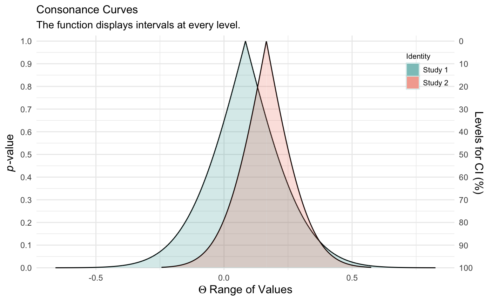

Compares the P-Value (Consonance), S-value (Surprisal), and Likelihood Function via ggplot2
Source:R/plot_compare.R
plot_compare.RdCompares the p-value/s-value, and likelihood functions using ggplot2 graphics.
plot_compare( data1, data2, type = "c", measure = "default", nullvalue = FALSE, position = "pyramid", title = "Interval Functions", subtitle = "The function displays intervals at every level.", xaxis = expression(Theta ~ "Range of Values"), yaxis = "P-value", color = "#000000", fill1 = "#239a98", fill2 = "#d46c5b" )
Arguments
| data1 | The first dataframe produced by one of the interval functions in which the intervals are stored. |
|---|---|
| data2 | The second dataframe produced by one of the interval functions in which the intervals are stored. |
| type | Choose whether to plot a "consonance" function, a "surprisal" function or "likelihood". The default option is set to "c". The type must be set in quotes, for example plot_compare(type = "s") or plot_compare(type = "c"). Other options include "pd" for the consonance distribution function, and "cd" for the consonance density function, "l1" for relative likelihood, "l2" for log-likelihood, "l3" for likelihood and "d" for deviance function. |
| measure | Indicates whether the object has a log transformation or is normal/default. The default setting is "default". If the measure is set to "ratio", it will take logarithmically transformed values and convert them back to normal values in the dataframe. This is typically a setting used for binary outcomes and their measures such as risk ratios, hazard ratios, and odds ratios. |
| nullvalue | Indicates whether the null value for the measure should be plotted. By default, it is set to FALSE, meaning it will not be plotted as a vertical line. Changing this to TRUE, will plot a vertical line at 0 when the measure is set to " default" and a vertical line at 1 when the measure is set to "ratio". For example, plot_compare(type = "c", data = df, measure = "ratio", nullvalue = "present"). This feature is not yet available for surprisal functions. |
| position | Determines the orientation of the P-value (consonance) function. By default, it is set to "pyramid", meaning the p-value function will stand right side up, like a pyramid. However, it can also be inverted via the option "inverted". This will also change the sequence of the y-axes to match the orientation.This can be set as such, plot_compare(type = "c", data = df, position = "inverted"). |
| title | A custom title for the graph. By default, it is set to "Consonance Function". In order to set a title, it must be in quotes. For example, plot_compare(type = "c", data = x, title = "Custom Title"). |
| subtitle | A custom subtitle for the graph. By default, it is set to "The function contains consonance/confidence intervals at every level and the P-values." In order to set a subtitle, it must be in quotes. For example, plot_compare(type = "c", data = x, subtitle = "Custom Subtitle"). |
| xaxis | A custom x-axis title for the graph. By default, it is set to "Range of Values. In order to set a x-axis title, it must be in quotes. For example, plot_compare(type = "c", data = x, xaxis = "Hazard Ratio"). |
| yaxis | A custom y-axis title for the graph. By default, it is set to "Consonance Level". In order to set a y-axis title, it must be in quotes. For example, plot_compare(type = "c", data = x, yxis = "Confidence Level"). |
| color | Item that allows the user to choose the color of the points and the ribbons in the graph. By default, it is set to color = "#555555". The inputs must be in quotes. For example, plot_compare(type = "c", data = x, color = "#333333"). |
| fill1 | Item that allows the user to choose the color of the ribbons in the graph for data1. By default, it is set to fill1 = "#239a98". The inputs must be in quotes. For example, plot_compare(type = "c", data = x, fill1 = "#333333"). |
| fill2 | Item that allows the user to choose the color of the ribbons in the graph for data1. By default, it is set to fill2 = "#d46c5b". The inputs must be in quotes. For example, plot_compare(type = "c", data = x, fill2 = "#333333"). |
Value
A plot that compares two functions.
Examples
# \donttest{ library(concurve) GroupA <- rnorm(50) GroupB <- rnorm(50) RandomData <- data.frame(GroupA, GroupB) intervalsdf <- curve_mean(GroupA, GroupB, data = RandomData) GroupA2 <- rnorm(50) GroupB2 <- rnorm(50) RandomData2 <- data.frame(GroupA2, GroupB2) model <- lm(GroupA2 ~ GroupB2, data = RandomData2) randomframe <- curve_gen(model, "GroupB2") (plot_compare(intervalsdf[[1]], randomframe[[1]], type = "s"))# }